Providing Items for Alert and Dialog Boxes
You use an item list ('DITL') resource to store information about all the items (text, controls, icons, or pictures) in an alert or dialog box. As described in "Creating Alert Sounds and Alert Boxes" beginning on page 6-17 and "Creating Dialog Boxes" beginning on page 6-22, you specify the resource ID of the item list resource in the alert ('ALRT') resource or dialog ('DLOG') resource.Within an item list resource for an alert box or a dialog box, you specify its static text, buttons, and the resource IDs of icons and QuickDraw pictures. In addition, you can specify checkboxes, radio buttons, editable text, and the resource IDs of other types of controls (such as pop-up menus) in an item list resource for a dialog box.
Figure 6-13 shows an example of an alert box displayed by the SurfWriter application when the user chooses the About command from the Apple menu. To display its own icon in the upper-left corner of the alert box, the application uses the
Alertfunction. An alert resource with resource ID 128 is passed in a parameter to theAlertfunction.
The alert resource in turn specifies an item list resource with resource ID 128. The item list resource specifies an OK button, some static text, and an icon, whose resource ID is 128. (It's customary to assign the same resource ID to the item list resource and to either its alert resource or dialog resource, but it's not necessary to do so.)In this example, when the user chooses the About command, the SurfWriter application uses the
Alertfunction to display the alert.itemHit := Alert(kAboutBoxID, @MyEventFilter);TheAlertfunction in this example displays the alert box defined by the alert resource represented by thekAboutBoxIDresource ID. As explained in "Responding to Events in Alert Boxes" beginning on page 6-81, theAlertfunction handles most user actions while the alert box is displayed. When the user clicks any button in an alert box,Alertremoves the alert box and returns to your application the item number of the selected button. The application-defined functionMyEventFilterthat is pointed to in this example allows background applications to receive update events for their windows.Listing 6-5 shows the resources, in Rez input format, that the
Alertfunction uses to display the alert box shown in Figure 6-13.Figure 6-13 Relationship of various resources to an alert box
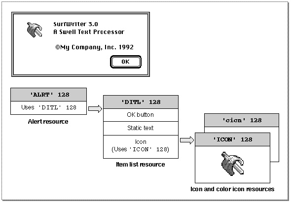
Listing 6-5 Rez input for providing an alert box with items
# define kAboutBoxID 128 /*resource ID for About SurfWriter alert box*/ # define kAboutBoxDITL 128 /*resource ID for item list*/ # define kSurfWriterIconID 128 /*resource ID for 'ICON' resource*/ # define kSurfWriterColorIconID 128 /*resource ID for 'cicn' resource*/ # define kAboutBoxHelp 128 /*resource ID for 'hdlg' resource*/ resource 'ALRT' (kAboutBoxID, purgeable) { /*About SurfWriter alert box*/ {40, 40, 156, 309}, /*rectangle for alert box*/ kAboutBoxDITL, /*use item list resource with ID 128*/ { /*identical alert stage responses*/ OK, visible, silent, OK, visible, silent, OK, visible, silent, OK, visible, silent, }, alertPositionMainScreen /*display on the main screen*/ }; resource 'DITL' (kAboutBoxDITL, purgeable) { /*items for About SW alert box*/ /*ITEM NO. 1*/ { {86, 201, 106, 259}, /*display rectangle for item*/ Button { /*the item is a button*/ enabled, /*enable item to return click*/ "OK" /*title for button is "OK"*/ }, /*ITEM NO. 2*/ {10, 20, 42, 52}, /*display rectangle for item*/ Icon { /*the item is an icon*/ disabled, /*don't return clicks on this item*/ kSurfWriterIconID /*use 'ICON' & 'cicn' resources */ /* with resource IDs of 128*/ }, /*ITEM NO. 3*/ {10, 78, 74, 259}, /*display rectangle for the item*/ StaticText { /*the item is static text*/ disabled, /*don't return clicks on this item*/ "SurfWriter 3.0\n"/*text string to display*/ "A Swell Text Processor \n\n " "©My Company, Inc. 1992" }, /*ITEM NO. 4*/ {0, 0, 0, 0}, /*help items get an empty rectangle*/ HelpItem { /*invisible item for reading in help balloons*/ disabled, /*don't return clicks on this item*/ HMScanhdlg /*scan resource type 'hdlg' for help balloons*/ {kAboutBoxHelp} /*get 'hdlg' with resource ID 128*/ } } }; data 'ICON' (kSurfWriterIconID, purgeable) { /*icon data for black-and-white icon for About SurfWriter goes here*/ }; data 'cicn' (kSurfWriterColorIconID, purgeable) { /*icon data for color icon for About SurfWriter goes here*/ };Items are usually referred to by their positions in the item list resource. For example, theAlertfunction returns 1 when the user clicks the OK button in the alert box created in
Listing 6-5. The Dialog Manager returns 1 because the OK button is the first item in the list. (Responding to the item numbers returned byAlertand other Dialog Manager functions is explained in "Handling Events in Alert and Dialog Boxes" beginning on page 6-77.) Similarly, when you use a Dialog Manager routine to manipulate an item, you specify it by its item number, an integer that corresponds to an item's position in its item list resource.The Dialog Manager also calls the Resource Manager to read in any individual items
- IMPORTANT
- Item list resources should always be marked as purgeable.
as necessary.When you create a dialog box or an alert box, the Dialog Manager creates a dialog record. The Dialog Manager then reads in the item list resource and stores a handle to it in the
itemsfield of the dialog record. Because the Dialog Manager always makes a copy of the item list resource and uses that copy, several independent dialog boxes may share
the same item list resource. As explained in "Adding Items to an Existing Dialog Box" beginning on page 6-46, you can use theAppendDITLandShortenDITLprocedures
to modify or customize copies of a shared item list resource for use in individual
dialog boxes.As an alternative to using a dialog resource, you can read in a dialog's item list resource directly and then pass a handle to it along with other information to
NewDialog, which creates the dialog box. Remember, however, that it is easier to localize your application if you use a dialog resource and theGetNewDialogfunction.An item list resource contains the following information for each item:
The display rectangle determines the size and location of the item. Specify the display rectangle in coordinates local to the alert or dialog box. For example, in Listing 6-5 the first item is displayed in a rectangle specified by the coordinates (86,201,106,259), which place the item in the lower-right corner of this alert box. More information about display rectangles and their placement is provided in "Display Rectangles" beginning on page 6-30.
- a display rectangle
- the type of item (as described in the next section)
- a constant (either
enabledordisabled) that instructs the Dialog Manager whether to report events for that item- either a text string or a resource ID, as appropriate for the type of item
In an item list resource, you can specify controls, text, icons, pictures, and other items that you define. In Listing 6-5, the first item's type is specified by the
Buttonconstant. Item types and their constants are described in the next section.For each item in the item list resource, you must also instruct the Dialog Manager whether to report to your application when the item is clicked. In Listing 6-5, the first item is enabled, because the
enabledconstant is specified. "Enabled and Disabled Items" on page 6-33 explains when and how to enable items.Depending on the type of item in the list, you usually provide a text string or a resource ID for the item. In Listing 6-5, the string
OKis specified as the button title for the first item. "Resource IDs for Items" beginning on page 6-33 explains what titles and resources are appropriate for the various item types.The information that you provide in an item list resource is described more fully in the next several sections.
Item Types
The following list shows the types of items you can include in alert and dialog boxes and the constants for specifying them in a Rez input file.The chapter "Help Manager" in Inside Macintosh: More Macintosh Toolbox describes how to create and use items of type
HelpItemto provide help balloons for your alert and dialog boxes. When you specify a help item, make it the last item in the list, as shown in Listing 6-5 on page 6-25.The chapter "Finder Interface" in this book describes icon (
'ICON') resources and color icon ('cicn') resources. Inside Macintosh: Imaging describes'PICT'resources.The chapter "Control Manager" in this book describes how to create a control with
a'CNTL'resource. Pop-up menus are easily implemented as controls. "Pop-Up Menus as Items" beginning on page 6-38 illustrates how to include pop-up menus in your
dialog boxes.Be aware that alert boxes should contain only buttons (which the user clicks to dismiss the alert box), static text, icons, and pictures. If you need to present other items, you should create a dialog box.
The first item in an alert box's item list resource should be the OK button; if a Cancel button is necessary, it should be the second item. The Dialog Manager provides these constants for the first two item numbers:
CONST ok = 1; cancel = 2;As described in "Creating Alert Sounds and Alert Boxes" beginning on page 6-17, you define within the alert resource whether the OK or the Cancel button is the default button for each alert stage. The Dialog Manager automatically draws a bold outline around the button that you specify and, if the user presses the Return key or Enter key, the Dialog Manager responds--or your event filter function should respond--as if the default button were clicked. ("Writing an Event Filter Function for Alert and Modal Dialog Boxes" beginning on page 6-86 describes event filter functions.)The Dialog Manager does not draw a bold outline around the default button for dialog boxes. "Using an Application-Defined Item to Draw the Bold Outline for a Default Button" beginning on page 6-50 shows how your application can outline the default button in a dialog box. You should normally give every dialog box a default button--that is, one whose action is invoked when the user presses the Return or Enter key. "Writing an Event Filter Function for Alert and Modal Dialog Boxes" beginning on page 6-86 shows how to test for these key-down events and respond as if the user had clicked the default button. If you don't provide your own event filter function, the Dialog Manager treats the first item in an item list resource as the default button. That is, although the Dialog Manager doesn't draw a bold outline around the button in a dialog box, the Dialog Manager does return its item number to your application when the user presses the Return or Enter key.
Don't set a default button to perform a dangerous action--for example, one that causes
a loss of user data. If none of the possible actions is safe, don't display a default border around any button and provide an event filter function that ignores the Return and Enter keys. This protects users from accidentally damaging their work by pressing Return or Enter out of habit. However, you should try to design a safe action that the user can invoke with a default button, such as a Save button. Figure 6-14 illustrates an alert box that provides a default button for a safe action.Figure 6-14 A safe default button in an alert box
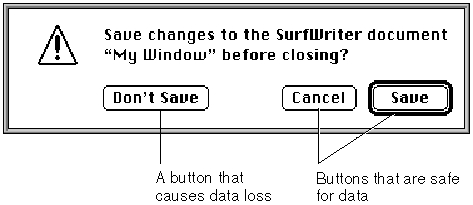
Provide a Cancel button whenever you can, and in your event filter function, map the Command-period key combination and the Esc (Escape) key to the Cancel button.
Don't display a bold outline around any button if you use the Return key in editable text items, because using the same key for two different purposes confuses users and makes the interface less predictable.
Display Rectangles
As previously mentioned, the display rectangle determines the location of an item within an alert box or a dialog box. Use the alert or dialog box's local coordinates to specify the display rectangle.For controls, the display rectangle becomes the control's enclosing rectangle. To match
a control's enclosing rectangle to its display rectangle, specify an enclosing rectangle
in the control resource that is identical to the one you specify for the display rectangle in the item list resource. (The control resource is described in the chapter "Control Manager" in this book.)For an editable text item, the display rectangle becomes the TextEdit destination rectangle and its view rectangle. Word wrapping occurs within display rectangles that are large enough to contain multiple lines of text, and the text is clipped if there's more than will fit in the rectangle. The Dialog Manager uses the QuickDraw procedure
- Note
- Note that, when an item is a control defined in a control (
'CNTL') resource, the rectangle added to the update region is the rectangle defined in the control resource, not the display rectangle defined in
the item list resource.FrameRectto draw a rectangle three pixels outside the display rectangle. For more detailed information about TextEdit, see the chapter "TextEdit" in Inside Macintosh: Text.For a static text item, the Dialog Manager draws the text within the display rectangle just as it draws editable text items, except that the Dialog Manager doesn't draw a frame rectangle outside the display rectangle.
For an icon or a QuickDraw picture larger than its display rectangle, the Dialog Manager scales the icon or picture to fit the display rectangle.
Although the procedure for an application-defined item can draw outside the item's display rectangle, this is not recommended, because if the Dialog Manager receives
an update event involving an area outside the display rectangle but inside the area where you draw your application-defined item, the Dialog Manager won't call your draw procedure.You should display items in functional and consistent locations, both within your application and across all applications that you develop. In alert boxes and in most dialog boxes, place the OK button in the lower-right corner and place the Cancel
- Note
- A click anywhere in the display rectangle is considered a click in that item. If display rectangles overlap, a click in the overlapping area
is considered a click in whichever item appears first in the item list resource.
button to its left. Figure 6-15 shows the recommended location of buttons and text
in an alert box.Figure 6-15 The consistent spacing of buttons and text in an alert box
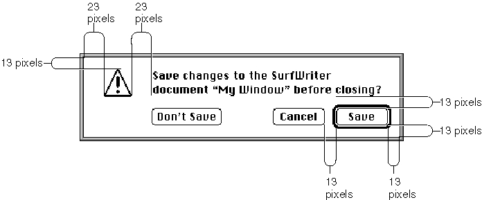
Generally, you should use distances of 13 and 23 white pixels to separate the items in dialog boxes and alert boxes. (When separating the default button from the window edges and other items, don't count the pixels that make up its bold outline.) However, be aware that the Window Manager adds 3 white pixels inside the window frame when it draws alert boxes and modal dialog boxes. Therefore, specify display rectangle locations as follows when you use tools like Rez and ResEdit:
For example, the rectangle for the alert box in Figure 6-15 has a specified height of
- Place the display rectangle for the lower-right button 10 pixels from the right edge and 10 pixels from the bottom edge of the alert or modal dialog box; align the display rectangles for other bottommost and rightmost items with this button.
- Place the display rectangle for the upper-left icon (or similar item) 10 pixels from the top edge and 20 pixels from the left of the alert or modal dialog box; align the display rectangles for other topmost and leftmost items with this item. The Dialog Manager automatically places the caution, note, and stop alert icons in this position when you use the
CautionAlert,NoteAlert, andStopAlertfunctions. When you use theAlertfunction, you must specify the icon and the location.- Place the other elements in the alert or modal dialog box 13 or 23 pixels apart, as shown in Figure 6-15.
85 pixels. The display rectangle for the Save button has a bottom coordinate of 75, and the display rectangle for the static text item has a top coordinate of 10. The Window Manager adds 3 white pixels at the top of the alert box and 3 pixels at the bottom, so
the alert box contains 13 white pixels below the Save button and 13 white pixels above the static text display rectangle. Listing 6-6 shows how the locations for these display rectangles are specified in a Rez input file.Listing 6-6 Rez input for consistent spacing of display rectangles
resource 'DITL' (200, purgeable) { { {55, 288, 75, 348}, Button {enabled, "Save"}, {55, 215, 75, 275}, Button {enabled, "Cancel"}, {55, 72, 75, 156}, Button {enabled, "Don't Save"}, {10, 75, 42, 348}, StaticText {disabled, "Save changes to the SurfWriter document "^0" before" " closing?"} } };When specifying display rectangle locations for items in movable modal and modeless dialog boxes, use the full distance of either 13 or 23 pixels to separate items from the window edges. For example, if the items in Figure 6-15 were placed in a modeless dialog box, the top coordinate of the Save button's display rectangle should be 52 instead of 55, and its bottom coordinate would be 72 instead of 75.As explained in the previous section, the default button can be any button; its assignment is secondary to the consistent placement of buttons. This rule keeps the OK button and the Cancel button consistently placed. Otherwise, the buttons would keep changing location depending on the default choice.
The Western reader's eye tends to move from the upper-left area of the alert or dialog box to the lower-right area. For Western versions of your software, use the upper-left area for elements (such as the alert icon) that convey the initial impression that you want to make. Place the buttons that a user clicks in the lower-right area.
The alignment of the items in an alert box or a dialog box may vary with localization. Although in Roman script systems these items are generally aligned left to right, items
in Arabic or Hebrew script systems should generally be aligned right to left, because Arabic and Hebrew are written from right to left. The TextEdit procedureTESetJust, described in the chapter "TextEdit" in Inside Macintosh: Text, controls the alignment of interface elements.When line alignment is right to left, as in Hebrew and Arabic, the Control Manager transposes checkboxes--and radio buttons--and their titles. That is, checkboxes and radio buttons appear to the right of the text instead of to the left, as in Roman script systems. Therefore, when you create checkboxes, radio buttons, and static text items
that need to align, make sure that their display rectangles are the same size.The dialog box at the top of Figure 6-16 shows several checkboxes and radio buttons with display rectangles of different sizes. The next dialog box in the figure illustrates what happens to the alignment of these items after the Control Manager transposes
the controls with their titles.The bottom two dialog boxes in Figure 6-16 illustrate how the Control Manager displays properly sized items when transposing the controls with their titles.
Figure 6-16 Incorrectly and correctly sized display rectangles for alternate script systems
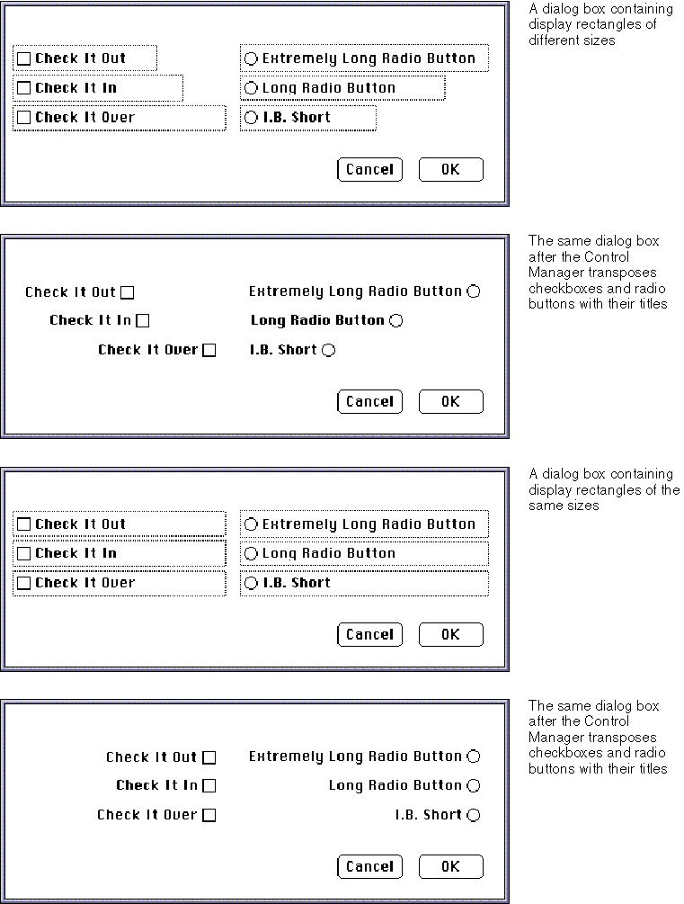
Enabled and Disabled Items
For each item in an item list resource, include one of these two constants to specify in a Rez input file whether the Dialog Manager should inform your application of events involving that item:
Constant Description enabled Informs your application about events involving this item disabled Doesn't inform your application about events involving this item Generally, you should enable only controls. In particular, you should enable buttons, radio buttons, and checkboxes so that your application knows when they've been clicked. You typically disable editable text and static text items. You normally disable editable text items because you use the Dialog Manager function
GetDialogItemTextto read the information in the items only after the user clicks the OK button. (Listing 6-12 on page 6-45 illustrates how to use theGetDialogItemTextfunction for this purpose.) You should use static text items only for providing information; users don't expect to click them. Likewise, you typically disable icons and pictures that merely provide information; if you use an icon or a picture as a buttonlike control to receive input, however, you must enable it. If you create an application-defined item such as a moving indicator to display information, you typically disable it. If you create an application- defined item such as a buttonlike control to receive input, you must enable it.Don't confuse disabling an item with using the Control Manager procedure
HiliteControlto make a control inactive. When you don't want the Control Manager to respond to clicks in a control, you make it inactive; when you don't want the Dialog Manager to report clicks in a control, you make it disabled.The Control Manager displays an inactive control in a way (dimmed, for example) that shows it's inactive, whereas the Dialog Manager makes no visual distinction between a disabled item and an enabled item. Figure 6-17 shows the difference between an inactive and an active control. The Control Manager procedure
HiliteControlhas been used to dim the inactive Eject button. If a user clicks this button, the Control Manager does not respond. However, when a user clicks the active Desktop button, the Control Manager inverts the button for 8 ticks.Buttons and other controls are generally enabled, and disabling them does not alter their appearance; the enabled radio button in Figure 6-17 would appear the same if it were disabled. Because the static text reading "Save this document as" in Figure 6-17 is not
a control, the application doesn't need to respond clicks in the text. Therefore, the application has disabled it; however, the static text would have the same appearance
if the application were to enable it.Resource IDs for Items
The final element for an item in an item list resource is usually either a text string or a resource ID. The choice depends on the type of item.Figure 6-17 Inactive controls and disabled items
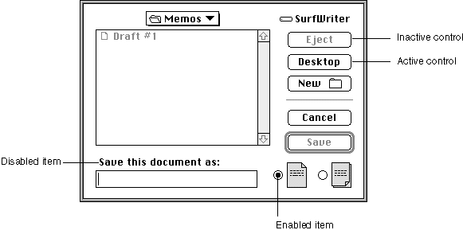
Provide a resource ID for icons, QuickDraw pictures, and controls other than buttons, checkboxes, and radio buttons. For an icon, provide the ID of an
'ICON'resource; for
a QuickDraw picture, the ID of a'PICT'resource; and for a control (including a pop- up menu), the ID of a'CNTL'resource. In Listing 6-5 on page 6-25, the resource ID of 128 specifies which'ICON'(and'cicn') resources to use for the second item in the item list resource.For a button, checkbox, radio button, static text item, and editable text item, supply a text string as the final element for the item in its item list resource. The next several sections provide guidelines for the text that you should provide.
For your own application-defined items, supply neither a title nor a resource ID.
Listing 6-15 on page 6-51 shows an item list resource that includes an application- defined item.Titles for Buttons, Checkboxes, and Radio Buttons
For a button, checkbox, or radio button, provide a text string for the control's title as the final element for the item when you specify it in the item list. In Listing 6-5 on page 6-25, the stringOKspecifies the button title for the first item in the item list resource.Use book-title capitalization for these items. In general, this means that you capitalize one-word titles and, in multiple-word titles, words of four or more letters. Usually you don't capitalize words such as in, an, or and. The rules for capitalization of titles appear in the Apple Publications Style Guide, which is available from APDA.
As explained in the chapter "Control Manager" in this book, the title of a checkbox should reflect two clearly opposite states, because a checkbox should allow the user to turn a particular setting either on or off. The opposites should be expressed in an equal sense in either state. If you can't devise a checkbox title that clearly implies its opposite state, you might be better off using radio buttons. With radio buttons, you can use two titles, thereby clarifying the states. Radio buttons should represent related, but not necessarily opposite, choices. Give each radio button a title consisting of a word or a phrase that identifies what the button does. Remember that, as described in the chapter "Control Manager" in this book, the radio buttons in a group are mutually exclusive: only one button in that group can be on at one time.
Whenever possible, title a button with a verb describing the action that the button performs. A user typically reads the text in an alert box or a dialog box until it becomes familiar and then relies on visual cues, such as button titles or positions, to respond. Buttons such as Save, Quit, or Erase Disk allow users to identify and click the correct button quickly. These titles are often more clear and precise than OK, Yes, and No. If the action can't be condensed into a word or two, OK and Cancel or Yes and No may serve the purpose. If you use these generic titles, be sure to phrase the wording in the dialog box so that the action the button initiates is clear. Figure 6-18 shows a dialog box with appropriate OK and Cancel buttons.
Figure 6-18 A dialog box with OK and Cancel buttons
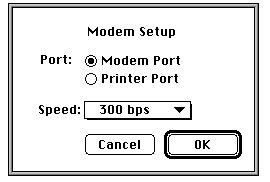
Cancel means "dismiss this operation with no side effects." It does not mean "I've read this dialog box" or "stop what you're doing regardless." When users click the Cancel button in your alert boxes, modal dialog boxes, and movable modal dialog boxes, your application should revoke any actions it took since displaying the alert or dialog box and then remove the box.
Your application should not remove a modeless dialog box when the user clicks a button; rather, you should remove the dialog box when the user clicks its close box or chooses Close from the File menu while the modeless dialog box is active.
When it is impossible to return to the state that existed before an operation began, don't use a Cancel button. You can use Stop or OK, which are useful in different situations. A Stop button may leave the results of a partially complete task intact, whereas a Cancel button always returns the application and its documents to their previous state. Use OK for a button that closes the alert box, modal dialog box, or movable modal dialog box and accepts any changes made while the dialog box was displayed.
Because of the difficulty in revoking the last action invoked from a modeless dialog box, these dialog boxes typically don't have Cancel buttons, although they may have Stop buttons. For example, the movable modal dialog box shown in Figure 6-19 uses a Stop button; clicking the button halts the current file copy operation but leaves intact the copies that were previously made.
Figure 6-19 A movable modal dialog box with a Stop button
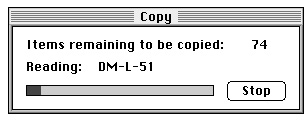
In an alert box that requires confirmation, use a button title that describes the result of accepting the message in the alert box. For example, if an alert box asks "Revert to the last saved version of the document," use a Revert button rather than an OK button. Try to use a verb in the button title; as in the Revert button in Figure 6-20, use the same verb that you use in your alert message.
Figure 6-20 An alert box with a Revert button
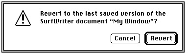
If the alert box presents the user with a situation in which no alternative actions are available, give the box a single button that's titled OK. You should interpret the user's clicking this button to mean "I've read the alert box."
A modal dialog box usually cuts the user off from the task. That is, when making choices in a modal dialog box, the user can't see the area of the document that changes. The user sees the changes only after dismissing the dialog box. If the changes aren't appropriate, then the user has to repeat the entire operation. To provide better feedback to the user, you need to give the user a way to see what the changes will be. Therefore, any selection made in a modal dialog box should immediately update the document contents, or you should provide a sample area in the dialog box that reflects how the user's selections will change the document. In the case of immediate document updating, the OK button means "accept this change" and the Cancel button means "undo all changes made through this dialog box."
The Dialog Manager displays button titles (as well as all other control titles) in the system font. To make it easier to localize your application, you should not change
the font.Text Strings for Static Text and Editable Text Items
For an editable text item, if you want the item to display only a blinking cursor, specify an empty string as the item's final element in the item list resource or specify a string if you want to display some default text.For a static text item, supply a text string as its final element when you specify it in the item list resource. In the third item in Listing 6-5, the text string
SurfWriter 3.0specifies the alert box's message.
\nA Swell Text Processor \n\n©My Company, Inc. 1992Whenever you provide static text items in alert and dialog boxes, ensure that the messages make sense to the user. Use simple, nontechnical language and don't provide system-oriented information to which the user can't respond.
Whenever applicable, state the name of the document or application in your alert or dialog box. For example, the alert box in Figure 6-20 on page 6-35 shows both the name of the application (SurfWriter) and the name of the document (My Window). This kind of message helps users who are working with several documents or applications at once
to make decisions about each one individually. "Changing Static Text" beginning on page 6-42 describes how to use theParamTextprocedure to supply the names of document windows to your alert and dialog boxes dynamically.Use icons and pictures whenever possible. Images can describe some error situations better than words, and familiar icons help users distinguish their alternatives better. However, because experience has shown that it is nearly impossible to create icons that are comprehensible or inoffensive across all international markets, you should be prepared to localize any icons or pictures you use. See the chapter "Icons" in Macintosh Human Interface Guidelines for more information about creating appropriate icons.
For your static text items, it's generally better to be polite than abrupt, even if it
means lengthening your message. Your message should be helpful, and it may offer constructive suggestions, but it should not appear to give orders. Its focus should be
to help the user perform the task, not to give an interesting but academic description
of the task itself.When you localize your application for use with other languages, the text may become longer or shorter. Translated text is often 50 percent longer than U.S. English text. You may need to resize your display rectangles and your alert and dialog boxes to accommodate the translated text.
By default, the Dialog Manager displays static text items in the system font. To make it easier to localize your application, you should not change the font. Do not use a smaller font, such as 9-point Geneva; some script systems such as KanjiTalk require 12-point fonts. You will save yourself future localization effort by leaving all the text in your alert and dialog boxes in the system script.
In alert boxes, try to include information that tells the user how to resolve the problem at hand. Never refer the user to external documentation for further clarification.
Stop alerts typically report errors to the user. A good error message explains what
went wrong, why it went wrong, and what the user can do about it. Express this information in the user's vocabulary, not in your programming vocabulary.
Figure 6-21 shows an example of a very poor alert message--the information is expressed in the programmer's vocabulary, and the user is offered no clue about
how to remedy the problem.Figure 6-21 An obscure and useless alert message
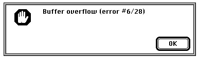
Figure 6-22 shows a somewhat better alert message. Although the vocabulary is less technical, no remedy to the problem is offered.
Figure 6-22 A less obscure alert message
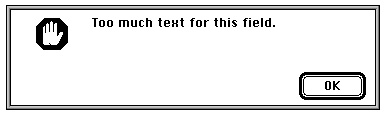
Figure 6-23 illustrates a good alert message. The message is specific, it's expressed in nontechnical terms, it explains why the error occurred, and it suggests a solution to
the problem.Figure 6-23 A clear and helpful alert message
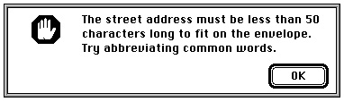
The best way to make an alert message understandable is to think carefully through the error condition itself. Can the application handle this without an error? Is the message specific enough so that the user can fix the situation? What are the recommended solutions?
Pop-Up Menus as Items
You can use pop-up menus to present the user with a list of mutually exclusive choices in a dialog box. Figure 6-24 illustrates a typical use of pop-up menus in a dialog box. As explained in the chapter "Control Manager" in this book, pop-up menus are especially useful as an alternative to radio buttons when the user must make one choice from a list of many or set a specific value, or when you must present a variable list of choices. The pop-up menu in Figure 6-24 allows the application to present a choice of modem speeds that vary according to the modem type in the user's computer.Figure 6-24 A pop-up menu in a dialog box
In System 7, pop-up menus are implemented as controls. To display a pop-up menu in a dialog box, you
Using the pop-up control definition function, the Dialog Manager automatically draws the pop-up box and its drop shadow, inserts the text into the pop-up box, draws a downward-pointing triangle, and draws the pop-up menu's title. When the user moves the cursor to a pop-up menu and presses the mouse button, the pop-up control definition function highlights the pop-up menu title, displays the pop-up menu, and handles all user interaction until the user releases the mouse button. When the user releases the mouse button, the pop-up control definition function closes the pop-up box, draws the user's choice in the pop-up box (or restores the previous item if the user doesn't make a new choice), and removes the highlighting from the pop-up menu title. The control definition function then sets the value of the control to the item selected by the user. Your application can use the Control Manager function
- define specific features of the pop-up menu in a control that uses the standard pop-up control definition function (described in the chapter "Control Manager" in this book)
- define the menu items of a pop-up menu just as you define items in other menus (using
GetMenuorNewMenu, as described in the chapter "Menu Manager" in
this book)- specify the pop-up menu in the dialog box's item list resource
GetControlValue
to get the number of the currently selected item.The modal dialog box shown in Figure 6-24 is created by defining a dialog resource that describes the dialog box and by defining an item list resource that describes the dialog items, including a control whose
'CNTL'resource uses the standard pop-up control definition function. Listing 6-7 shows the dialog resource and item list resource for this modal dialog box.Listing 6-7 Rez input for a dialog resource and an item list resource for a dialog box that includes a pop-up menu
resource 'DLOG' (kModemDialog, purgeable) { {62, 184, 216, 416}, dBoxProc, visible, noGoAway, 0x0, kModemDialogDITL, "", alertPositionMainScreen }; resource 'DITL' (kModemDialogDITL, purgeable) { { {123, 152, 144, 222}, Button {enabled, "OK"}, {123, 69, 144, 139}, Button {enabled, "Cancel"}, {13, 70, 33, 204}, StaticText {enabled, "Modem Setup"}, {41, 23, 61, 64}, StaticText {enabled, "Port:"}, {41, 67, 59, 186}, RadioButton {enabled, "Modem Port"}, {59, 67, 77, 186}, RadioButton {enabled, "Printer Port"}, {90,18,109,198}, Control {disabled, kPopUpCNTL}, {123, 152, 144, 222}, UserItem {disabled} /*outline OK button*/ {0,0,0,0}, HelpItem {disabled, HMScanhdlg{kModemHelp}} /*Balloon Help*/ } };Listing 6-8 shows the'CNTL'and'MENU'resources for the Speed pop-up menu shown in Figure 6-24. Notice that the display rectangle specified for the control in the item list resource is the same as the enclosing rectangle specified in the control resource. See the chapter "Control Manager" in this book for a complete description of how to specify values for a pop-up menu's control resource.Listing 6-8 Rez input for a control resource and a menu resource for a pop-up menu
resource 'CNTL' (kPopUpCNTL, preload, purgeable) { {90, 18, 109, 198}, /*enclosing rectangle of control*/ popupTitleLeftJust, /*title position*/ visible, /*make control visible*/ 50, /*pixel width of title*/ kPopUpMenu, /*'MENU' resource ID*/ popupMenuCDEFProc, /*pop-up control definition ID*/ 0, /*reference value*/ "Speed:" /*control title*/ }; resource 'MENU' (kPopUpMenu, preload, purgeable) { mPopUp, textMenuProc, 0b1111111111111111111111111111111, enabled, "Speed", { "300 bps", noicon, nokey, nomark, plain; "1200 bps", noicon, nokey, nomark, plain; "2400 bps", noicon, nokey, nomark, plain; "9600 bps", noicon, nokey, nomark, plain; "19200 bps", noicon, nokey, nomark, plain } };Keyboard Navigation Among Items
Your dialog boxes may have several items, such as editable text items and scrolling lists, that can accept input from the keyboard. You need to give users a visual cue indicating which item is currently accepting input from the keyboard. Each item type has its own distinct indicator. The Dialog Manager automatically displays a blinking cursor in an editable text item to indicate that it is accepting keyboard input. You can also use theSelectDialogItemTextprocedure (explained on page 6-131) to indicate a selected text range within an editable text item.When a scrolling list is accepting keyboard input, you should indicate it by a rectangular border of two black pixels, separated from the list by one pixel of white space. In
Figure 6-25, the AppleTalk Zones scrolling list is the item currently accepting keyboard input in the Chooser dialog box. See the chapter "List Manager" in Inside Macintosh:
More Macintosh Toolbox for details about creating lists in dialog boxes.Because all typing goes to the active window, there should be only one active area and only one indicator at any time. If only one element in a dialog box can accept keyboard input and that element is a scrolling list, it's not necessary to place a border around it.
The Dialog Manager automatically handles mouse-down events and keyboard events
for the Tab key. Thus, the user can select any item that accepts keyboard input by clicking the desired item or by pressing the Tab key to cycle through the available items. When the user presses the Tab key, the Dialog Manager accepts the changes made to the current item and selects the next item--as listed in the item list--that accepts keyboard input. When the user clicks another item, the Dialog Manager accepts the changes made to the current item and selects the newly clicked item.